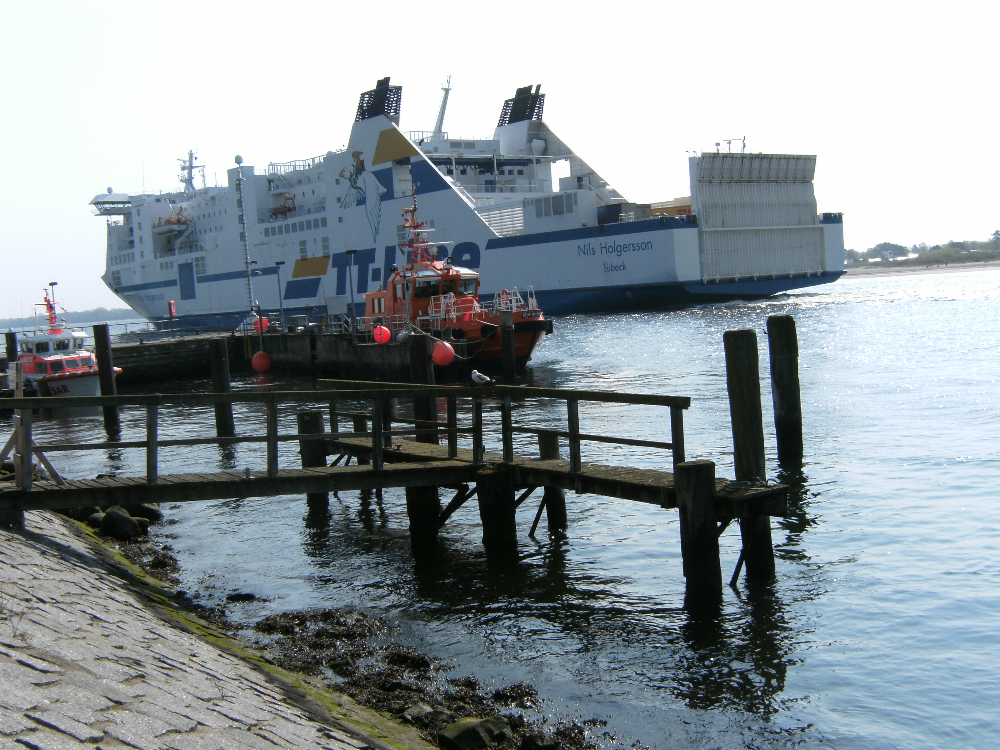
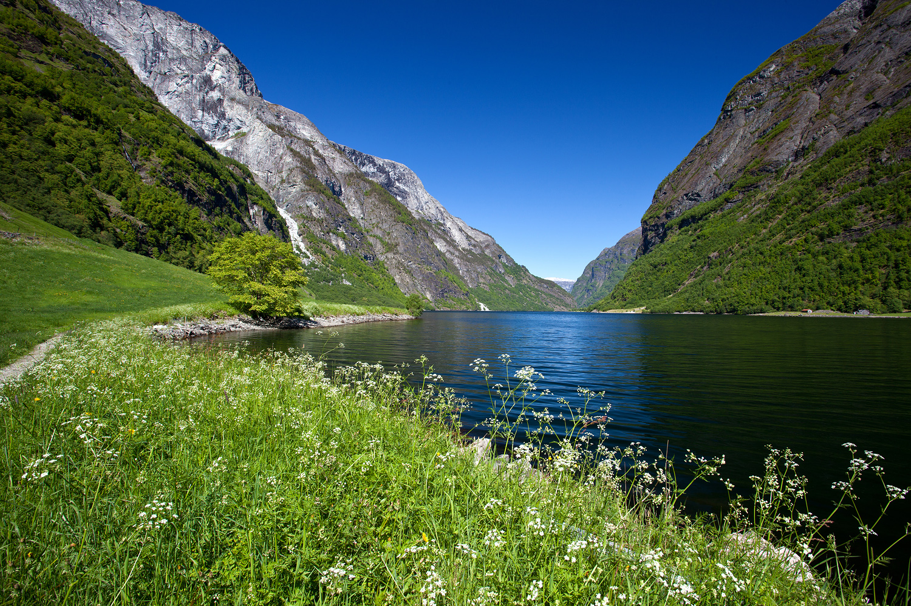
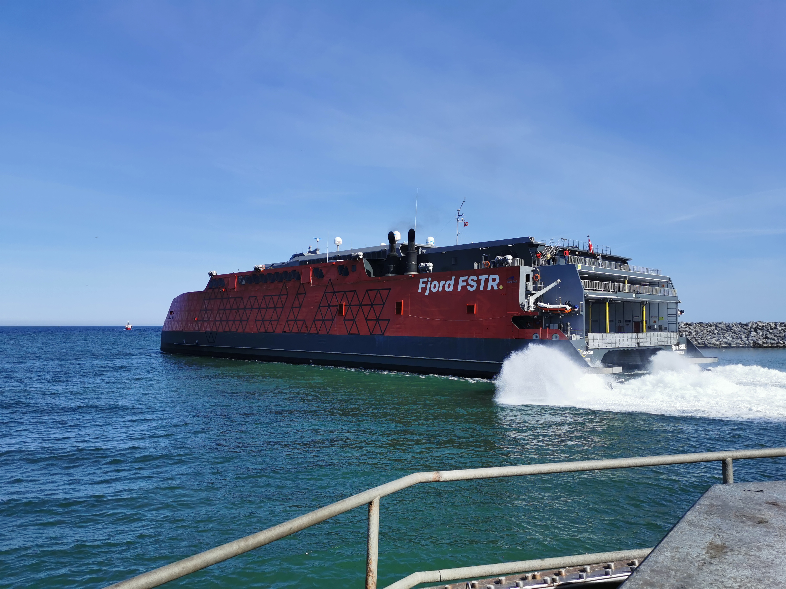

Паромы: 4 переправы

Переправа 1
Travemünde → Trelleborg
TT-Line / Stena Line
7–9 ч · ночнойБронируем каюту заранее (за 2–4 нед.). Отправление ~22:00, прибытие ~06:00. Ужин и завтрак на борту.
Бронирование: ttline.com

Переправа 2
Geiranger → Hellesylt
Fjord1
~1 чТолько летнее расписание (май–октябрь). Машина на борту. Несколько рейсов в день — лучше бронировать место для авто.
Бронирование: fjord1.no

Переправа 3
Gudvangen → Flåm
Lustrabaatane AS
~2 ч · UNESCONærøyfjord — самый узкий в мире. Машина на борту. В июле — обязательно бронировать за 1–2 дня.
Бронирование: lustrabaatane.no

Переправа 4
Kristiansand → Hirtshals
Color Line
2.5 чНесколько рейсов в день. Рекомендуем вечерний рейс (17:30 или 20:00). Каюта не нужна — удобный паром.
Бронирование: colorline.com
Плюс короткие bilferge через фьордовые рукава в Норвегии — 10–20 минут, машина на борту, без бронирования.